Zora’s House began with a question.
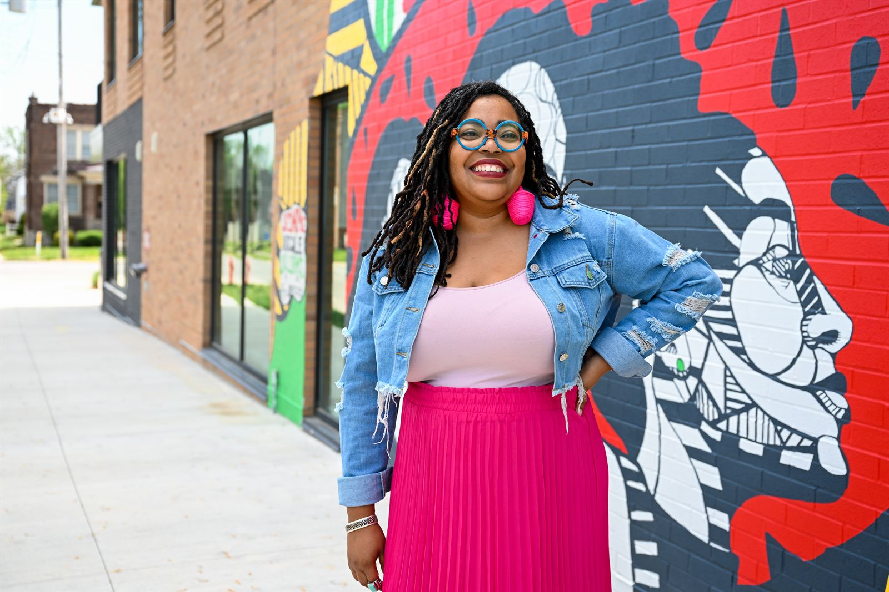
About Zora's House
We’re building a world where women+ of color have room to be whole.
Zora’s House is a community institution rooted in a simple but radical belief: the lives of women+ of color matter.
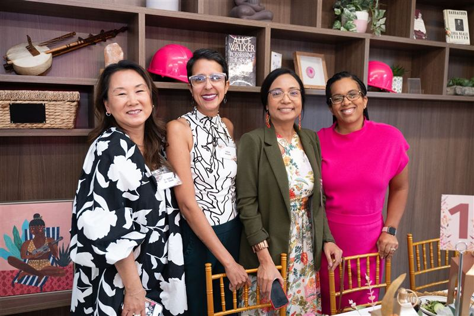
We create spaces, relationships, resources, and opportunities that help women+ of color live, lead, create, and build as our fullest selves.
Because when women+ of color are stronger, more connected, and better resourced, that strength doesn’t stop with us—it reaches our families, our organizations, and our communities.
Our Mission
Zora’s House is a nonprofit that exists to ensure that women of color and gender expansive people of color (women+) of color have the space, skills, and strategic relationships we need to thrive personally and professionally.
We know that lasting change requires more than any one program, resource, or intervention. We invest in the whole ecosystem that helps women+ of color and our communities become stronger, more connected, and more resilient.
Our work is grounded in four interconnected pillars:
- Relational
- Economic
- Holistic
- Systemic
Our Vision
The world that Zora’s House is creating is a world that recognizes the full humanity of Black, Indigenous, and other people of color; and creates space for these communities to thrive, not just survive. To feel safe. To have joy. To dream, create, and lead, free from the burden of patriarchy, white supremacy, and other forms of oppression.
That world starts with women of color.
Our Story
Zora’s House began with a question:
What would be possible if women+ of color had a space designed with us at the center?
Since 2018, that question has grown into a community, a movement, and an institution. Along the way, Zora’s House has expanded its programs, deepened its partnerships, invested millions of dollars in women+ of color and the organizations we lead, and opened a permanent home designed to serve our community for generations.
Our Journey
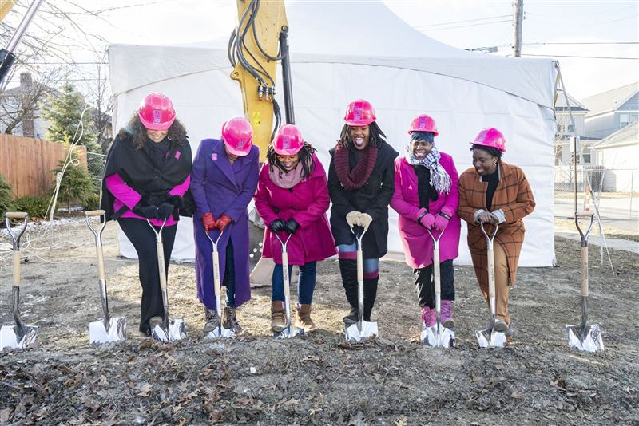
2023
Shovels in the ground for our permanent home.
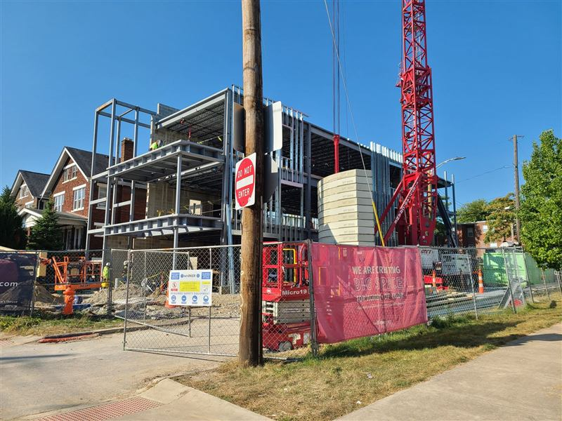
September 2023
Building our permanent home.
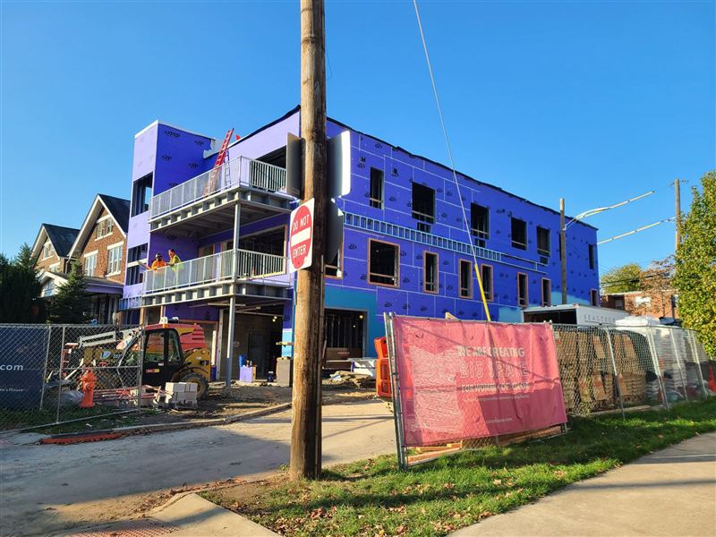
November 2023
Building our permanent home.
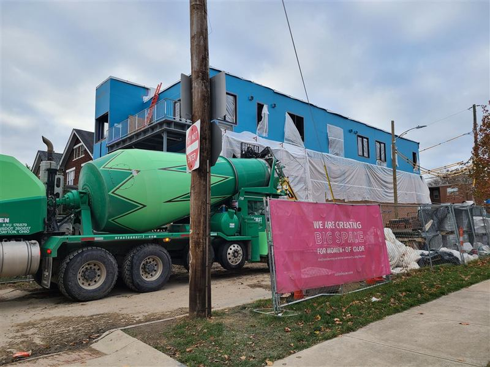
December 2023
Building our permanent home.
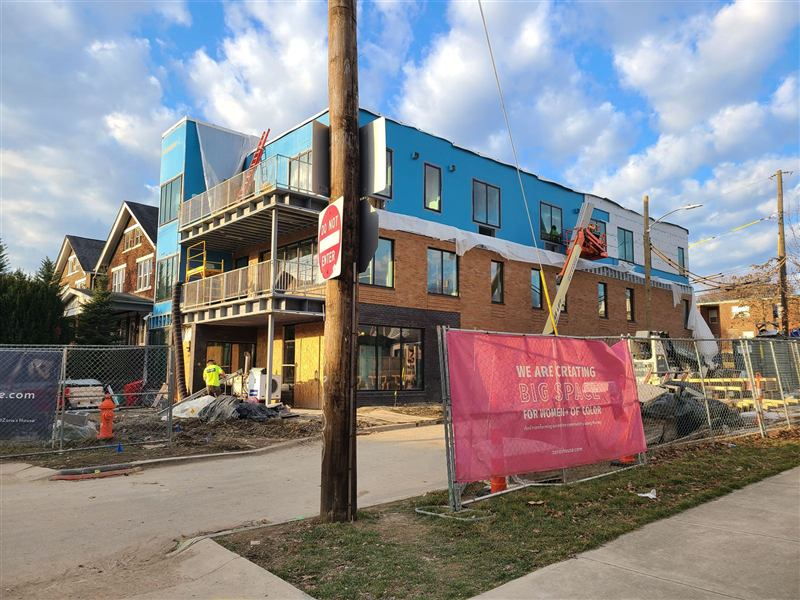
February 2024
Building our permanent home.
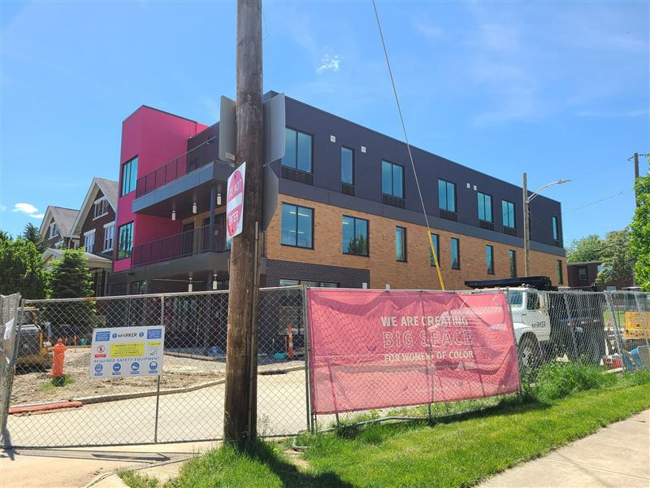
May 2024
Building our permanent home.
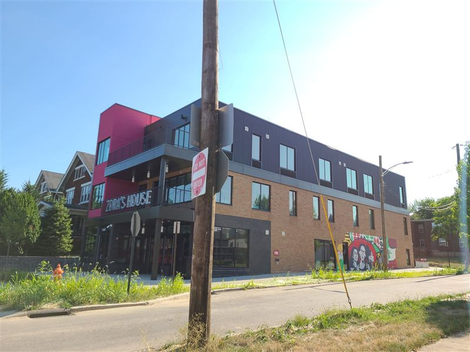
July 2024
A permanent home designed to serve our community for generations.
Help us build what comes next.
Invest in Women+ of Color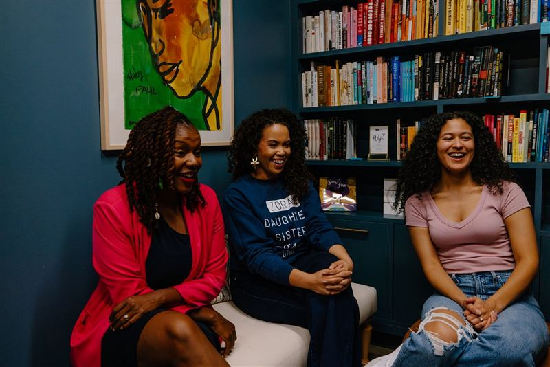
Why Zora?
Named for Zora Neale Hurston
Named for author and activist Zora Neale Hurston, Zora’s House carries forward her spirit of creative resistance. Hurston was a prolific writer, anthropologist, and truth-teller who used her genius to capture the complexity, beauty, humor, and humanity of Black life at a time when those stories were too often distorted, dismissed, or ignored. She understood that telling the truth about our lives—and insisting on the value of our own imagination—could itself be an act of power.
And yet, for all she created, Hurston died in poverty and was buried in an unmarked grave, her work largely forgotten. Years later, another Black woman, Alice Walker, went searching for Zora, helped restore her work to public memory, and ensured that her light would not remain hidden. That lineage lives at the heart of Zora’s House: women+ of color seeing the brilliance in one another, refusing to let it be diminished, and using our collective power to make sure our stories, ideas, and contributions are fully seen, heard, and carried forward.
Our People
Meet the People Behind the House
Zora’s House is built and stewarded by people who believe deeply in the power, brilliance, and leadership of women+ of color.
Our Team
Our team brings together experience in community building, strategy, research, programs, operations, storytelling, fundraising, and more—all in service of creating an institution our community can rely on.
Team photo
[Name]
[Title]
Team photo
[Name]
[Title]
Team photo
[Name]
[Title]
Team photo
[Name]
[Title]
Interested in joining us? Explore Careers
Our Board
Our Board of Directors helps steward the mission, resources, and long-term future of Zora’s House.
- [Board Member Name][Affiliation]
- [Board Member Name][Affiliation]
- [Board Member Name][Affiliation]
- [Board Member Name][Affiliation]
- [Board Member Name][Affiliation]
- [Board Member Name][Affiliation]
Our Impact
What Starts Here Doesn’t Stay Here
- A conversation becomes a collaboration.
- A program sparks a new idea.
- An introduction opens a door.
- An investment strengthens an organization.
- A woman with more room to thrive brings that possibility everywhere she goes.
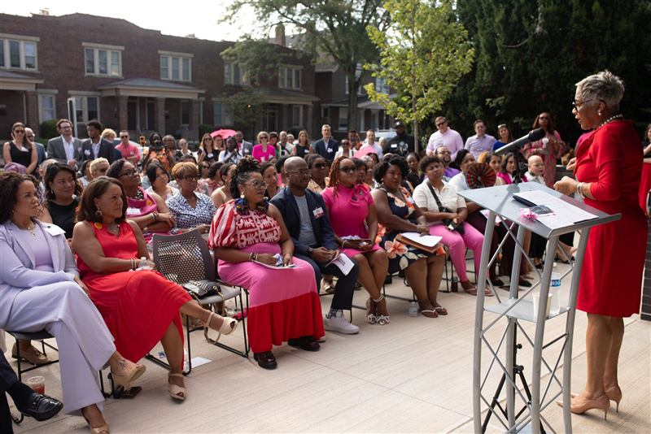
Since 2018, Zora’s House has been building impact that reaches far beyond our walls.
Each year, our annual report tells a little more of that story—the people we’ve reached, the resources we’ve invested, what we’ve learned, and what we’re building next.
Explore Our Latest Annual ReportWant to Know Us a Little Better?
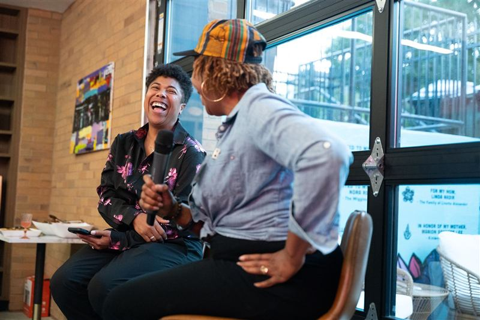
See what we’re building.
Explore the programs, initiatives, and opportunities happening at Zora’s House.
Explore Our Work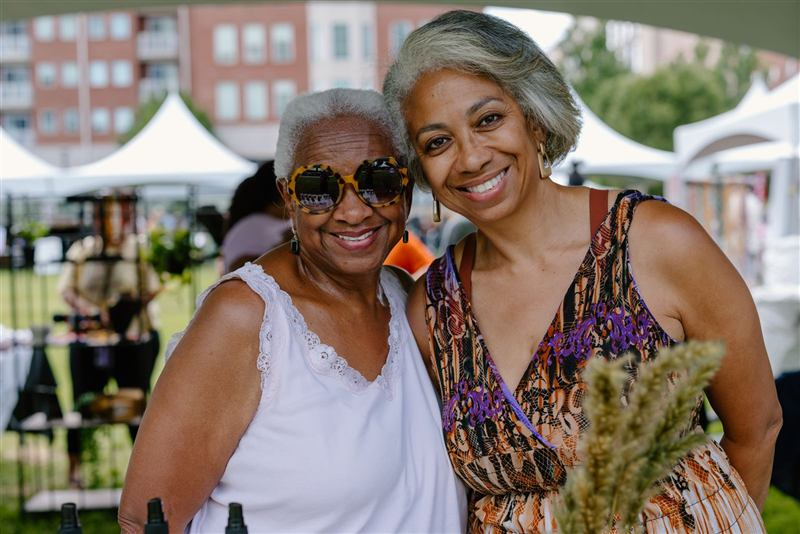
See where we’ve been.
Read stories and national media coverage about Zora’s House and our work.
News + Press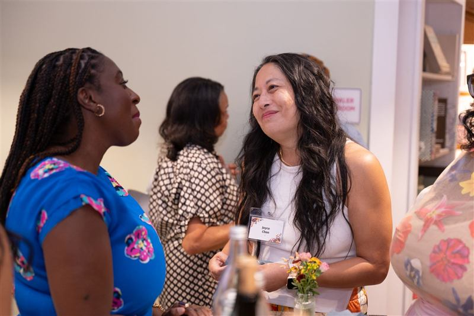
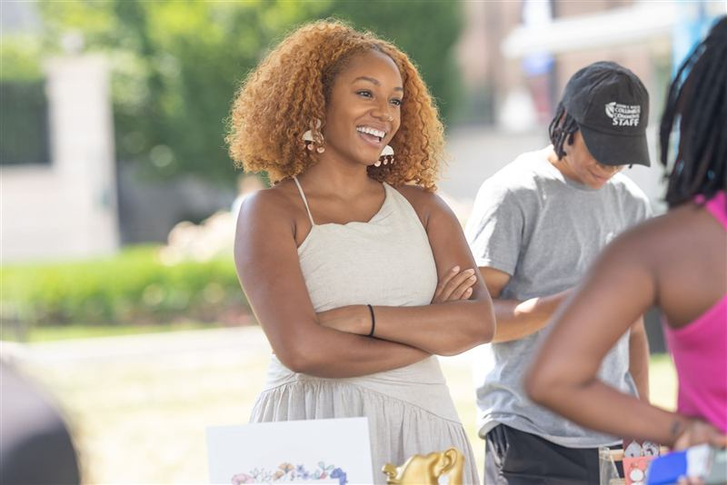
There’s a Place for You Here.
Whether you’re looking for community, ready to invest in the work, interested in partnering, or simply want to come through the doors, there’s a way for you to be part of what we’re building.
Find Your Place at Zora’s House